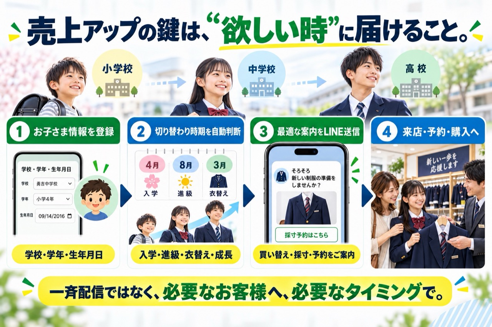
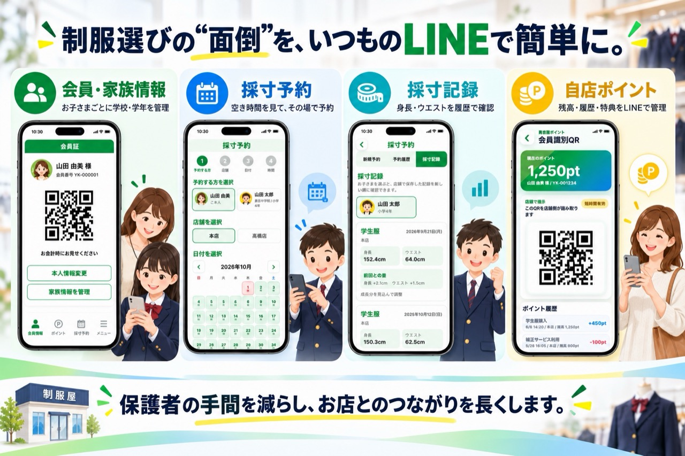
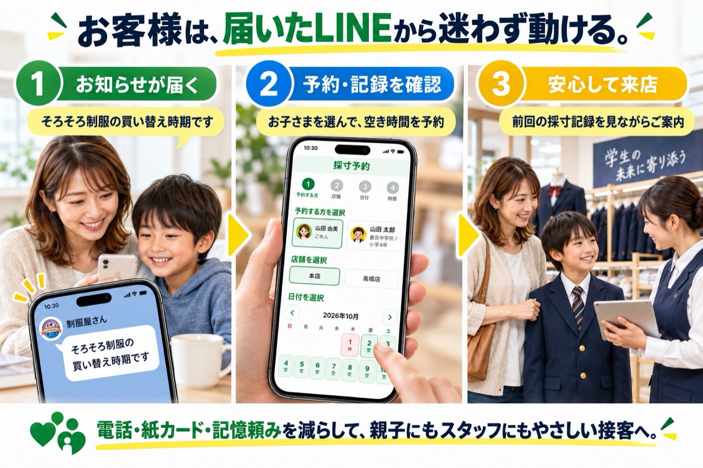
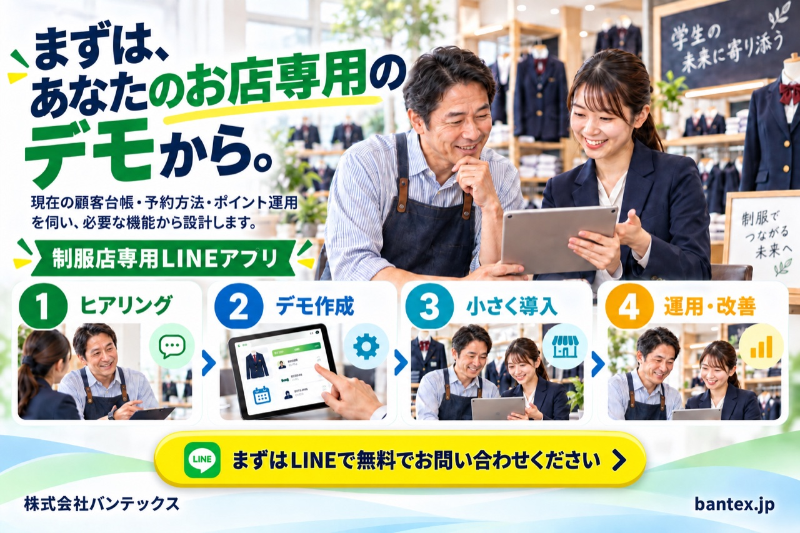

制服屋さん限定。欲しい時期にLINEが届く、制服店専用LINEアプリ
入学準備、買い替え、成長のタイミングを自動で判断し、お客様に必要な瞬間を逃さず売上につなげます。自動LINE配信、採寸予約、採寸記録、自店ポイント管理を、お店専用の仕組みとして設計します。
売上アップの鍵は、欲しい時に届けること
お子さまの学校、学年、生年月日を登録。入学、進級、衣替え、成長による切り替わり時期を判断し、買い替え、採寸、予約の案内をLINEで送ります。一斉配信ではなく、必要なお客様へ必要なタイミングで届けます。

制服選びの面倒を、いつものLINEで簡単に
会員・家族情報、採寸予約、身長とウエストの採寸記録、自店ポイントの残高・履歴・特典をLINEで管理できます。お客様にとって、採寸履歴はお子様の成長記録にもなります。

お客様は、届いたLINEから迷わず動ける
買い替えのお知らせを受け取り、お子さまを選んで空き時間を予約し、前回の採寸記録を見ながら安心して来店できます。

配信も顧客管理も、ひとつの画面から
学校、学年、購入履歴で顧客を選び、入学前、衣替え、買い替え時期の自動配信を設定。店舗別の採寸予約、身長、ウエスト、ポイントの付与・利用履歴を一つの管理画面で確認できます。
まずは、あなたのお店専用のデモから
現在の顧客台帳、予約方法、ポイント運用を伺い、ヒアリング、デモ作成、小さな導入、運用改善の順に、必要な機能から設計します。まずはLINEで無料でお問い合わせください。

制服店専用LINEアプリのよくある質問
既存のLINE公式アカウントを使えますか？
現在のLINE公式アカウントと運用方法を確認し、友だちとの関係を活かせる連携方法を設計します。
買い替え時期は何から判断しますか？
お子さまの学校、学年、生年月日と、店舗が設定した入学、進級、衣替え、買い替えのルールを組み合わせて判断します。
採寸記録は何を保存しますか？
基本の採寸記録は身長とウエストです。店舗、採寸日、品目、メモとともに履歴で確認できます。
ポイント制度もお店ごとに変えられますか？
付与、利用、特典の考え方を伺い、自店の運用ルールに合わせて設計します。